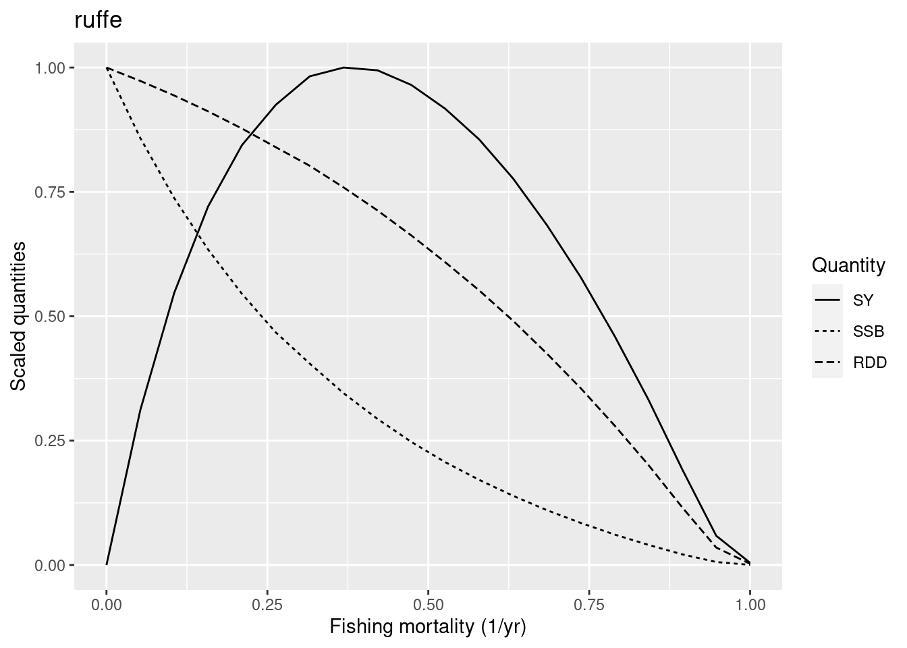
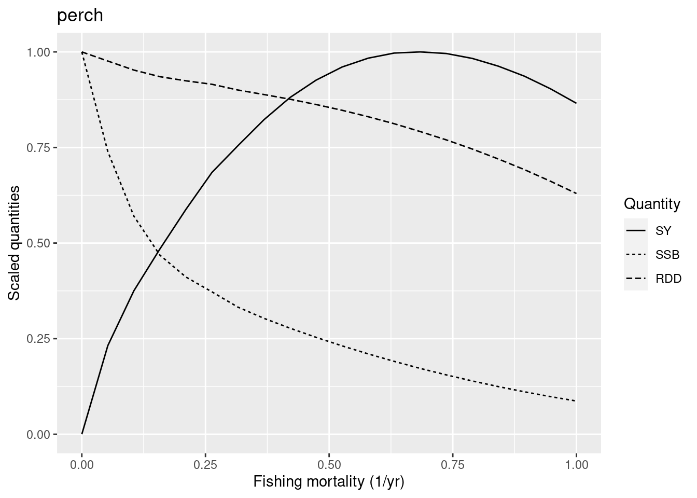
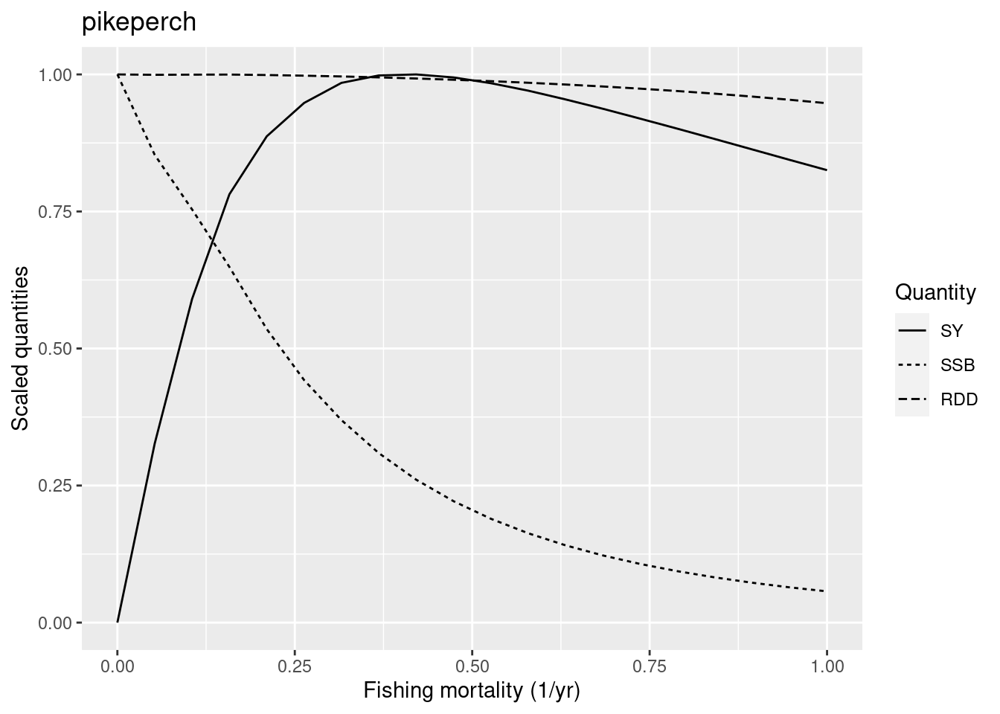
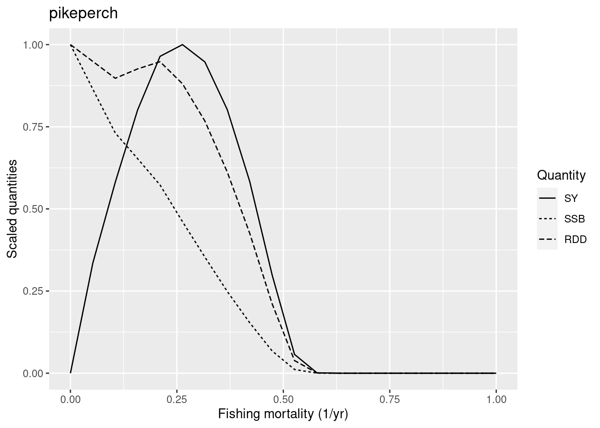
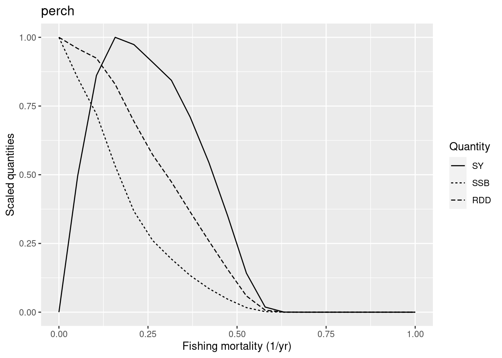

remotes::install_github("sizespectrum/mizerExperimental", ref = "tuneMR")
remotes::install_github("sizespectrum/mizerMR")
library(mizerExperimental)
library(mizerMR)
library(tidyverse)Tune resilience
Introduction
In the previous week we tuned our model parameters so that the steady state of the model agrees with observed growth rates, average observed biomasses and with observed catches. We did not yet tune how sensitively our model reacts to changes away from its steady state. In particular, we did not tune how resilient the species are to fishing. We will do that in this tutorial.
As usual, we load the necessary packages
We load our Curonian lagoon model that we saved after refining the model in the previous tutorial using the tuneParams() gadget.
cm <- readParams("../build/cur_model_refined.rds")Reproduction dynamics
In this tutorial we are going to look at an aspect of the model that has a big impact on the resilience of species to perturbations: the reproduction dynamics. In the tutorial on dynamics of size spectra in week 1 we briefly looked at how density dependence of reproduction can influence how species react to changes in mortality, such as from fishing. It might be good if you go back to that tutorial and remind yourself.
When we built our models in week 2 we were not concerned about the parameters that specify the reproduction dynamics. We were only concerned with setting the resulting reproduction rate for each species to the levels that produced the observed species biomass. But because the parameters for the reproduction dynamics will affect how resilient species are, we will choose appropriate values for them in this tutorial.
Stock-recruitment relationships
In usual fisheries models, the reproduction dynamics is captured in the stock-recruitment relationship which relates the number of new recruits to the spawning stock biomass. Recruits are the fish that survive up to a size where they enter the fishery, which is the size at which the fisheries model starts modelling them.
Mizer is different in that it tracks individuals from the size at which they hatch (egg size) all the way to adult sizes. So much of the density dependence that is usually encoded in stock-recruitment relationships is modelled explicitly in mizer through the growth and mortality that larvae and juveniles experience until they reach recruitment size. So in mizer we specify the reproduction rate (the rate at which individuals enter the smallest size class) instead of the recruitment rate.
There are many density-dependent effects that mizer does not capture explicitly, like for example limits on the available spawning grounds. This additional density dependence is encoded in a non-linear relationship between the energy that a species invests into reproduction and the rate at which new individuals enter the smallest size class in the model, as we will now discuss.
There are several parameters and quantities that were introduced in that earlier tutorial that we would like to recall now:
The rate E_R at which a species invests energy into reproduction. We discussed how this depends on the species parameters in a section of the tutorial on single species spectra in the first week of the course. In standard fisheries models the energy invested is assumed to be proportional to the spawning stock biomass. In mizer the energy invested also depends on how much food is available for the spawning stock. But nevertheless you won’t go wrong too much if in your head you identify E_R as spawning stock biomass.
The parameter
ereprodescribes the efficiency with which the energy that a species invests into reproduction is converted to eggs. Multiplying E_R byereproand by the conversion factor from biomass to number of eggs gives the quantity that we called R_{di}: the rate of egg production. We also sometimes refer to R_{di} as the “density-independent reproduction rate”. The efficiencyereprocan be quite small because a lot of the energy expended on reproduction goes not into the production of eggs but in associated processes, like for example migration to the spawning grounds.The rate R_{dd} at which new individuals can enter the smallest size class in the model (usually this represents the hatching of eggs). This depends in a non-linear way on the rate R_{di} of egg production and therefore also non-linearly on the rate at E_R at which the species invests energy into reproduction. We therefore sometimes refer to this as the “density-dependent reproduction rate”.
The parameter
R_maxthat gives the maximum rate at which individuals can join the smallest size class, no matter how much energy the species invests.
These concepts are nicely illustrated by the following figure that you saw earlier:

The black dot in the diagram is meant to represent the steady-state values for E_R and R_{dd}. The solid curves represents how the density-dependent reproduction rate R_{dd} depends on the rate E_R. Both the solid blue line and the solid black line go through the black dot, which means that they result in the same steady-state reproduction. They differ by the choice of the maximum reproduction rate R_max (the height of the dotted line) and the reproductive efficiency erepro (the slope of the dashed line representing R_{di}).
We can see in the diagram how, as E_R is changed, for example through a depletion of spawning stock biomass due to fishing, the resulting change in the reproduction rate R_{dd} is more pronounced along the solid black curve than along the blue curve. This is why an increase in R_{max} will make the species less resilient to fishing.
Note how both R_max and erepro need to be changed at the same time in order for the resulting curve for the reproduction rate to still go through the black dot, i.e., in order not to change the reproduction rate in the steady state. As we discussed earlier, the function setBevertonHolt() automatically changes both parameters together in the correct manner. In that function we can specify the desired reproduction curve by specifying either R_max or erepro or the ratio between R_{dd} at steady state and R_{max}, which we refer to as the reproduction level.
We like to work with the reproduction level because it is a number between 0 and 1, where 0 means that the rate of reproduction increases in proportion to E_R and 1 means that the rate of reproduction is independent of E_R. The higher the value of the reproduction level the less impact a change in E_R will have on the species’ reproduction. Thus higher levels of the reproduction level make the species more resilient for example to fishing.
As usual, we load the necessary packages
remotes::install_github("sizespectrum/mizerExperimental", ref = "tuneMR")
remotes::install_github("sizespectrum/mizerMR")
library(mizerExperimental)
library(mizerMR)
library(tidyverse)We load our Curonian lagoon model that we saved after refining the model in the previous tutorial using the tuneParams() gadget.
cm <- readParams("../build/cur_model_refined.rds")How resilient should species be?
We will need to tune the reproduction level of each species to make sure that their response to fishing is reasonable. How do we know what is reasonable? It is not a straightforward question. We can start by consulting general fisheries models. You can read about the principles of basic fisheries surplus production models in this excellent book by Malcolm Haddon “Using R for Modelling and Quantitative Methods in Fisheries”.
In the simplest of these models, the population dynamics are specified in terms of a maximum population growth rate r (not to be confused with the maximum hatching rate R_max used in mizer) and a carrying capacity, which represents the unfished biomass level. Under these simplest standard assumptions about density dependence, maximum sustainable yield (MSY) is obtained when the stock is at 50% of the unfished biomass level. MSY is approximately r/4 \cdot unfished biomass and the fishing mortality which gives this MSY is r/2. This fishing mortality is referred to as F_{MSY}. This means that if for example r = 0.5 then the peak of the yield curve should be at about F_{MSY} = 0.25. If unfished biomass is 1000 tons, MSY will be at 125 tons.
We usually do not know population growth rates r for our species, but we can look up estimates in the FishBase life-history tool section. Or we can use generic estimates which suggest r of 0.6-1.5 for high resilience species (Von Bertalanffy growth rate K>0.3, maturation age < 1, high fecundity) and r of 0.2-1 for medium resilience species. We reproduce the table from this reference here:

We had included the categorisation of our species in the species parameter dataframe in the resilience column.
species_params(cm) |> select(resilience, funcgr)Thus according to the above discussion, we should expect an F_{MSY} between 0.3 and 0.75 for smallfish, between 0.1 and 0.5 for our benthivores and between 0.025 and 0.25 for the ominvores and predators. These values are derived from single species models with very different assumptions to those of ours, so they can only be used as very general guides.
Alternatively, we can use Ken Andersen’s book and expectations for species with different asymptotic sizes, as estimated from trait-based models (where all species parameters are determined in terms of the asymptotic size) and when all species are fished with 50% selectivity at 5% of their asymptotic size. The panels below represents species with different asymptotic sizes: 333 g (top), 10 g (bottom left), and 10 kg (bottom right). The lines show yield (solid black lines), yield per recruit (dashed lines), spawning stock biomass (dark gray lines), and recruitment (light gray lines), all scaled by their maximum value. We will not deal with yield per recruit, so ignore the dashed lines. This figure shows that highest yields are expected at fishing mortality of about 0.3-0.5/year.

In this tutorial we will tune our model so that they give the maximum sustainable yield at the fishing mortalities that are in the range suggested by the table above, i.e. so that F_{MSY} = r/2 with r in the range given in the last row of that table. We are not saying that this is the only or best method.
Constant reproductive efficiency
The reproduction parameters in our model are not yet chosen sensibly, as we can see by looking at the current reproduction levels:
smallfish ruffe breams roach vimba
0.32264652 0.02129403 0.00000000 0.52334987 0.00000000
carassius perch pikeperch burbot predator_fish
0.07675473 0.22022985 0.65493089 0.30352817 0.10223259 For some species these reproduction levels are extremely low.
We need to decide what reproduction parameters we should set to start our tuning. We will follow the approach of Jacobsen et al. 2016 and initially set the reproductive efficiency erepro to the same value for all species.
We use the setBevertonHolt() function to set the values for erepro. That function automatically also adjusts the values for R_max to keep the steady state reproduction rate R_{dd} the same, as we discussed above.
If we try to set the value for erepro very low, the setBevertonHolt() function will issue a warning:
cm <- setBevertonHolt(cm, erepro = 0.0001)Warning in setBevertonHolt(cm, erepro = 1e-04): For the following species
`erepro` has been increased to the smallest possible value: erepro[ruffe] =
0.000321; erepro[roach] = 0.000736; erepro[carassius] = 0.000311; erepro[perch]
= 0.000177Because we want all species to have the same value, we choose a value that is larger than those required. So we choose erepro = 0.001.
cm <- setBevertonHolt(cm, erepro = 0.001)
species_params(cm) |> select(erepro, R_max)Let’s see what reproduction levels this gives:
smallfish ruffe breams roach vimba
0.9460163 0.6794001 0.9040744 0.2642426 0.9185775
carassius perch pikeperch burbot predator_fish
0.6891149 0.8232825 0.9905353 0.9881604 0.9962368 Remember: the reproduction level is the ratio between RDD and R_max and can vary between 0 and 1. It tells us how close the actual reproduction (after applying density dependence) is to the theoretical maximum, set by R_max. So instead of using the getReproductionLevel() function we could also have done the calculation ourselves:
getRDD(cm) / species_params(cm)$R_max smallfish ruffe breams roach vimba
0.9460163 0.6794001 0.9040744 0.2642426 0.9185775
carassius perch pikeperch burbot predator_fish
0.6891149 0.8232825 0.9905353 0.9881604 0.9962368 We can also look how close the density dependent reproduction rate RDD is to the density independent reproduction rate RDI, which is the rate at which eggs are produced.
smallfish ruffe breams roach vimba
18.524101 3.119152 10.424749 1.359144 12.281619
carassius perch pikeperch burbot predator_fish
3.216623 5.658749 105.655800 84.462397 265.728307 This tells us that many species can produce large amounts of eggs, but the actual reproduction is strongly capped by the R_max parameter.
Tuning resilience to fishing
We now want to adjust the reproduction levels so that the resilience of the species in our model matches expectations.
Setting generic gear selectivity
If you have system specific data on how changes in fishing under system specific gear parameters change species biomasses, you should use these system specific details. We do not have such data for Curonian Lagoon, so we will explore species responses in general. For that purpose, for this exploration of the resilience of species, we set the gear parameters in such a way that all species are fished similarly.
Our current gear parameters are set for a specific commercial fishery, which selects some species but does not catch smallfish and almost no ruffe. For smaller fish they target only adults and for largest fish they also target juveniles. Thus the fishing mortality this gear imposes on the different species is not suited to assess resilience equally for all species.
To tune the resilience of each species to extra mortality we will set catchability of all species to 1, so that effort values directly reflect fishing mortality. We will also set gear 50% selectivity to half the maturation length of each species and 25% selection to half the 25% maturation length.
Gear selectivity parameters are defined by length, so we will first convert w_mat and w_mat25 to length values.
weight_to_length <- function(w, params) {
a <- species_params(params)$a
b <- species_params(params)$b
(w / a) ^ (1 / b)
}
l_mat = weight_to_length(species_params(cm)$w_mat, cm)
l_25mat = weight_to_length(species_params(cm)$w_mat25, cm)We now create a new gear parameter data frame with changed selectivity parameters:
# We start with the current gear parameters
gp <- gear_params(cm)
# and update values in l50 and l25 columns
gp$l50 <- l_mat / 2
gp$l25 <- l_25mat / 2
# and set all catchability to 1
gp$catchability <- 1We assign the model that uses these new gear parameters in a new variable cm_generic_gear so that we can keep the old model around.
cm_generic_gear <- cm
# Set new gear parameters for the new model
gear_params(cm_generic_gear) <- gpLet’s look at the fishing mortality from the new gear:
plotFMort(cm_generic_gear)
As always after having changed model parameters, we need to bring the model to steady state again.
cm_generic_gear <- steady(cm_generic_gear)Convergence was achieved in 16.5 years.Exploring yield curves
To measure the resilience of our species to fishing, we will change the fishing mortality for one species at a time and check how their yields, spawning-stock biomasses (SSB) and reproduction rate (RDD) change in response. We keep the fishing mortality for the other species fixed. For our selected species we run through a range of fishing mortalities between 0 and a maximum. For each fishing mortality we run the projection until the system has settled down to a new steady state. Then we calculates the yield, the spawning stock biomass SSB and the reproduction rate RDD in that steady state. After doing that for all fishing mortalities we can plot all the results in a graph. The plotYieldCurve() function does all that for us. Here we plot the yield curve for smallfish.
plotYieldCurve(cm_generic_gear, species = "smallfish", F_max = 2)
We refer to the yield achieved in the steady state as the sustainable yield (SY) because because it can be sustained indefinitely. The sustainable yield for this species has a maximum (MSY) at a fishing mortality of about 0.8. We refer to this value as F_{MSY}. The small fish have a high resilience to fishing. This is close enough to expectations, so we judge that it is not necessar to make changes to the resource level of “smallfish”.
Next we look at ruffe. This is classified as a medium resilience species, so we would like the F_{MSY} to be between 0.1 and 0.5.
plotYieldCurve(cm_generic_gear, species = "ruffe", F_max = 1)
We see that the F_{MSY} is at about 0.4, so again we have no reason to change the reproduction level. We encourage you to investigate the yield curves of the other medium resilience species in a similar way.
Note
If you run the above code yourself in your worksheet, you will notice that for some fishing mortalities, plotYieldCurve() gives a warning that convergence was not reached within the 99 years for which we ran the projection. This means that we stopped the simulation before the species had completely settled into a new stable state for that fishing level and thus the result for this specific fishing level is only approximate. But approximate values are good enough for our purpose. Often we find that it is the more extreme values of F where we do not get convergence.
We jump to the first low resilience species in our model: perch. As a low resilience species it should have an F_{MSY} below 0.25.
plotYieldCurve(cm_generic_gear, species = "perch", F_max = 1)
The graph shows that the F_{MSY} is closer to 0.7. So we have reason to reduce the reproduction level for perch to make it less resilient. Its current reproduction level is
getReproductionLevel(cm_generic_gear)["perch"] perch
0.8232825 We do not know how much we need to reduce the reproduction level to get a sufficiently low F_{MSY}. We just try some values. Let’s try 0.3.
# First we save current reproduction level into a vector
rep_level <- getReproductionLevel(cm_generic_gear)
# then we replace our species' reproduction level with a new value
rep_level["perch"] <- 0.3
# and asign it back to the model
cm_generic_gear <- setBevertonHolt(cm_generic_gear,
reproduction_level = rep_level)
# and plot F curves again
plotYieldCurve(cm_generic_gear, species = "perch", F_max = 1)
With that reproduction level of 0.3 for perch, its F_{MSY} is just below 0.5. So still too high for a low resilience species. But before we try to reduce the reproduction level further, let’s move on to the next species, pikeperch.
plotYieldCurve(cm_generic_gear, species = "pikeperch", F_max = 1)
Its F_{MSY} is also too high. So we also reduce the reproduction level of pikeperch.
rep_level["pikeperch"] <- 0.3
cm_generic_gear <- setBevertonHolt(cm_generic_gear,
reproduction_level = rep_level)
plotYieldCurve(cm_generic_gear, species = "pikeperch", F_max = 1)Warning in projectToSteady(params, t_max = t_max, progress_bar = FALSE, :
pikeperch are going extinct.
Warning in projectToSteady(params, t_max = t_max, progress_bar = FALSE, :
pikeperch are going extinct.
Warning in projectToSteady(params, t_max = t_max, progress_bar = FALSE, :
pikeperch are going extinct.
Warning in projectToSteady(params, t_max = t_max, progress_bar = FALSE, :
pikeperch are going extinct.
Warning in projectToSteady(params, t_max = t_max, progress_bar = FALSE, :
pikeperch are going extinct.
The new F_{MSY} is at the upper end of what we would expect for a low-resilience species, but we judge this to be o.k.
Note
Notice that for high values of the fishing mortality plotYieldCurve() issues a warning to let us know that pikeperch will go extinct under this fishing mortality. That is fine.
So let’s return to perch. We previously saw that even with its reduced reproduction level it was still too resilient. Let’s look at its yield curve again:
plotYieldCurve(cm_generic_gear, species = "perch", F_max = 1)Warning in projectToSteady(params, t_max = t_max, progress_bar = FALSE, : perch
are going extinct.
Warning in projectToSteady(params, t_max = t_max, progress_bar = FALSE, : perch
are going extinct.
Warning in projectToSteady(params, t_max = t_max, progress_bar = FALSE, : perch
are going extinct.
Warning in projectToSteady(params, t_max = t_max, progress_bar = FALSE, : perch
are going extinct.
Are you surprised? Compare this yield curve for perch with the one we plotted above. The F_{MSY} has dropped from close to 0.5 to closer to 0.15 even though we have not changed the reproduction level of perch. The reduction in the resilience of perch has been caused solely by the reduction in resilience of pikeperch.
Important
We have discovered above that the resilience of a species is influenced by the resilience of the other species. So resilience is a true multi-species effect.
We decide to increase the reproduction level for perch a bit again to make it slightly more resilient.
rep_level["perch"] <- 0.4
cm_generic_gear <- setBevertonHolt(cm_generic_gear, reproduction_level = rep_level)But we don’t have hard data on the resilience of our species, so these are judgement calls and we will be interested to see what choices you will make.
You are encouraged to go through all the species and check that their resilience looks o.k.
Set new reproduction levels
Above we studied the resilience of species to changes in their mortality imposed by an artificial fishing gear. We used guidance from a classification of species into resilience classes and the expected F_{MSY} derived from very simple single-species models to adjust the reproduction levels for our species. Now we will use those reproduction levels in our model with the original gear parameters.
cm <- setBevertonHolt(cm, reproduction_level = rep_level)Let’s plot the yield curve for one of the species that is caught commercially: breams. On the left we show the yield curve for the commercial yield, on the right the yield curve for our generic gear that we used for tuning the reproduction level.
# Yield curve with the commercial gear
plotYieldCurve(cm, species = "breams", F_max = 1)
# Yield curve with generic gear
plotYieldCurve(cm_generic_gear, species = "breams", F_max = 1)

Why the difference? Let’s look how the original gear parameters differ from our generic set
c(l_mat = l_mat[3],
l50_commercial = gear_params(cm)$l50[3],
l50_generic = gear_params(cm_generic_gear)$l50[3]) l_mat l50_commercial l50_generic
21.98905 35.70000 10.99453 We can see that with the commercial gear parameters, selectivity starts much later, so we are only catching the largest individuals. Therefore the species can sustain a much higher fishing mortality for those selected individuals, because the population can sustain itself even if these large individuals are fished away.
You are encouraged to look at the yield curves for other species when using the commercial gear.
Finally we save our model with tuned resilience to disk for use in the next tutorial.
saveParams(cm, "cur_model_resilient.rds")Exercise 1
Look at the yield curves in the model we just saved (in the worksheet for this tutorial you can either reproduce the tuning steps above or you can take the shortcut and load our saved model). What approximately is the value of F_{MSY} for pikeperch?
Exercise 2
Now tune the reproduction levels for your version of the Curonian lagoon model that you built last week. Don’t be surprised if things work out very differently for your model.
Summary
Identifying an appropriate reproduction level for our model species is very important, because the reproduction level will determine a species’ resilience to fishing.
To judge whether a reproduction level is appropriate, we estimate the fishing mortality that will give maximum sustainable yield (F_{MSY}). We use general fisheries and size ecology theory to get expected F_{MSY} values for species with different life history parameters. Naturally, these are just approximate estimates, but they might be good enough for our purposes. Nevertheless, it is important to explore how our study conclusions might be affected by changes in species reproduction level.
When we explore F_{MSY} for a species it is important to think about the gear selectivity that is used to impose fishing. If selectivity is such that small and large individuals are captured, resulting F_{MSY} will be lower.
Species resilience to fishing is a true multi-species phenomenon. If we change the reproduction level of one species it can affect the resilience of other species. So when we have chosen a set of reproduction levels, we need to run again through all species to check that their resilience is as expected.